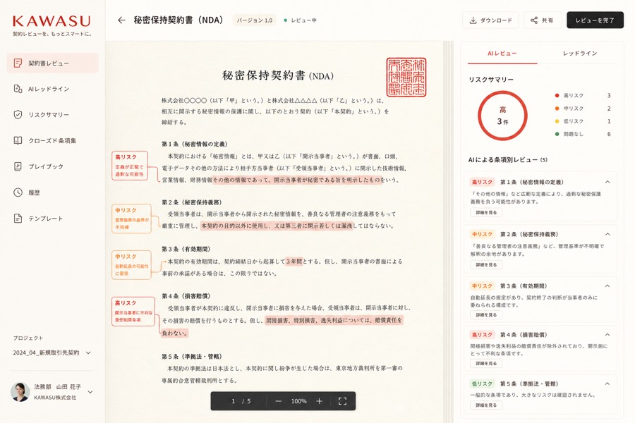
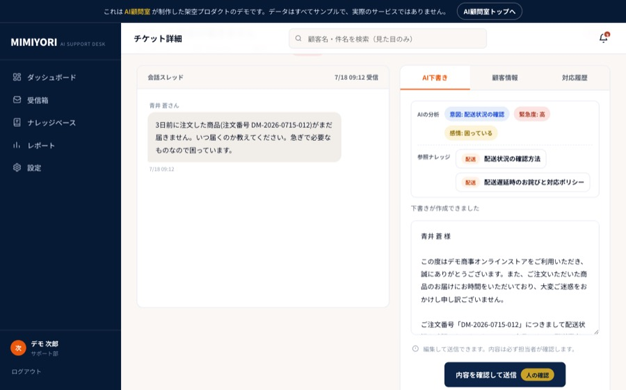

特集｜SAAS-CLASS SHOWCASE

業務SaaSを、まるごと3本作りました。
電子契約・請求書経理・カスタマーサポート。市販のクラウドサービス級の業務システムを、デモとして丸ごと制作しました。3本ともログインして全画面を操作できます。AIが契約書をレビューし、請求書を読み取り、返信を下書きする様子を、そのまま体験してください。

第1弾｜電子契約・契約管理
KAWASUカワス
AIが契約書全10条をスキャンし、リスクのある条項を指摘して修正文案まで提示。承認フローから電子締結スタンプまで一気通貫で動きます。
▶ ログインして触る
第2弾｜請求書・経理
SOROBANソロバン
紙の請求書をAIがスキャンし、読取箇所が光りながら項目が埋まっていく。検算・インボイスチェック・仕訳提案から支払管理まで。
▶ ログインして触る
第3弾｜カスタマーサポート
MIMIYORIミミヨリ
問い合わせをAIが分析し、社内ナレッジを参照して返信を下書き。人が確認して送信すると、対応がナレッジとして蓄積されていきます。
▶ ログインして触る※3本とも本デモのために制作した架空のプロダクトです。データはすべてサンプル。実際は御社の業務フローに合わせて専用に構築します。